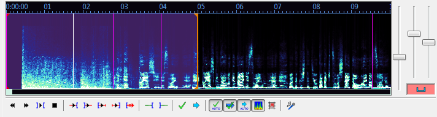

当你加载了音频文件，Aegisub将会出现如下图的界面：
你可以按住并拖动该视图底部来改变音频波形/频谱显示的高度。
右边那几个能按下去的是切换按钮。按下去表示启用。按钮和控制按键的功能如下（许多默认都有快捷键）：
当你在字幕栏中选中一行时，Aegisub将会在音频视图里高亮那行，如果你打开了自动卷动功能，音频视图会将所选行移至视图中间（一般打轴时不建议开启自动卷动）。你会注意到音频视图里会有各种竖线；粉色表示加载的视频（参阅使用视频部分）的关键帧，白色分割线表示当前视频帧的位置,粗的红线和蓝线分别表示行的开始和结束，你可以左击或右击来设置开始或结束时间，或者拖动那些竖线。按 播放 按钮（默认快捷键为 s ）来听所选部分，或用其他不同的播放按钮来播放周围不同的音频。当你对这行时间轴满意后，按提交按钮来保存并移至下一行，然后每行都这样操作一遍，就是这么简单。
按住shift键可使行边线紧贴其他行边线和关键帧线（或者在设置里可以关闭紧贴功能）。 按住ctrl可以一次移动两行重叠的线。 例如，当两行时间轴挨在了一起，不过你想让两行变换的时间靠后一些，那么你就按住ctrl再移动两行间的那条线，这样就能同时改变第一行的结束时间和第二行的开始时间。
按住alt可以平移所有选择的行（同时移动开始和结束时间）。
如果你因某些原因需要在一段时间内完成视频或片段的打轴任务，那么你需要注意下面这些提示：
一个常见的打轴方案（本文原作者的首选方案）就像下面这样：打开“提交后自动转至下一行”，并关闭自动提交所有更改、自动卷动以及Medusa热键模式。保持你的左手除大拇指外的四指放在s、d、f、g键上。你的大拇指不需要做任何事。将你的右手放在鼠标上。在波形上（通过鼠标左击和右击）选择一段可能包含当前行文字的音频，然后按 s 键来播放它。在播放的同时，如果需要可以调整开始时间。当播放进度标记到达行的结束位置时，同时调整结束时间。如果需要更准确的时间轴，可以按 d 来播放选区的最后500毫秒音频，按 q 来播放开始前的500毫秒音频，按 w 播放选区结束后的500毫秒音频，或按 e 播放选区开始的500毫秒音频。当你有了一些经验后，你可能只需要 s 键，也许还会用到 d 和 q。当你对这行的轴满意时，按 g 键来提交更改并移至下一行。向前滚动音频视图可以按 f。如果需要向后滚动可以按 a。移至下一行或上一行而不提交更改，可以用 z 和 x 键。
这个方案的优点是你不再需要移动你的手。经过训练，速度通常可以变得非常快；给一个25分钟有着350-400句对话的一集视频打轴可以很轻松地在40分钟之内完成，一些比较简单的剧情会更快。
当然，这个方案不一定所有人都觉得舒服，你应该在找到最适合你的方案前尝试其他的打轴姿势。

当你按下频谱分析模式按钮时，波形的纵轴不再显示振幅（信号强度）——取而代之的是频率。音调越高频率就越高，同时颜色变为代表振幅，黑色或深蓝为寂静，白色为最大音量。这看起来有些晕，但频率视图非常适合人声，它能比普通波形更容易在背景充斥大量噪音（或音乐）时，告诉你一行（或卡拉OK模式的一个字）的开始和结束时间点。在制作卡拉OK时间轴时特别有用。使用一会儿它你就知道它是如何工作的了。
注意在频谱分析模式时，由于颜色代表了信号强度，“垂直缩放”滑块的功能被重新定义为控制颜色的强度。
因计算频谱数据是非常耗费CPU的，所以默认频谱质量设为了一般质量。你可以在音频选项里改变频谱质量。如果你自己编译Aegisub且没有使用FFTW3，那么这很重要，FFTW3很快，能使默认质量提高一些。